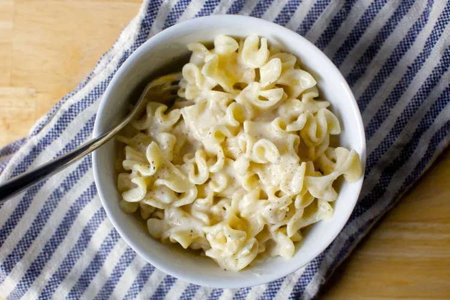

Quick, Essential Stovetop Mac-and-Cheese

Description
frankly i have yet to make this but it looks perfect for a lazy person like yours truly
Ingredients
- Kosher salt
- 4 oz dried pasta, such as macaroni or another small twisty shape
- 2 tsp salted or unsalted butter
- 2 tsp all purpose flour
- 1/2 cup milk
- Many grinds of black pepper
- 1/2 cup finely grated parmesan or pecorino cheese
Steps
- Bring a small-to-medium pot of very well-salted water to a boil and add your dried pasta.
Cook it until firm and tender, then drain.
- Return pot to stove and melt butter in the bottom. Using a spoon or whisk, add flour and mix
until it disappears.
- Add milk, a tiny splash at a time, stirring constantly so no lumps form.
- Season with 1/4 tsp kosher salt and many grinds of black pepper.
- Bring sauce to a simmer. Cook, stirring, for 1 to 2 minutes.
- Remove from heat and stir in grated cheese until combined.
- Add drained pasta, stir evenly to coat.
- Scoop into a bowl and finish it with more black pepper if you wish. Repeat as needed.
back to home